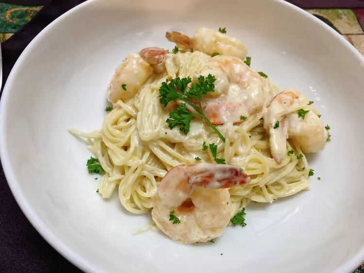

Creamy Garlic Butter Shrimp Pasta

Who needs an expensive restaurant meal when you can make this flavorful meal at home! A nice glass of white wine
and salad will compliment this dish perfectly!
Ingredients
- 1 lb angel hair pasta
- 1 stick unsalted butter
- 1/4 cup minced garlic, or to taste
- 1 lb frozen jumbo shrimp, peeled and deveined
- 1 teaspoon Greek seasoning (such as Cavender All Purpose Greek Seasoning)
- 1 pinch crushed red pepper flakes
- 4 ounces cream cheese, cubed
- 1 cup heavy whipping cream
- 1 cup milk
- 1/2 cup freshly grated Parmigiana Reggiano cheese
- 1/2 cupreserved pasta water, or as needed
- freshly chopped fresh parsley for garnish to taste (optional)
Directions
- Bring a large pot of lightly salted water to a boil. Cook angel hair pasta in the boiling water, stirring
occasionally, until tender yet firm to the bite, 4 to 5 minutes. Drain and reserve 1/2 cup of pasta water.
- Meanwhile, heat a heavy skillet over medium high heat. Add butter and let melt. Reduce heat to low and add
garlic. Cook until garlic is browned and fragrant, about 1 minute. Add shrimp, Greek seasoning, and red
pepper flakes. Cook until shrimp starts to turn pink, turning shrimp occasionally, 2 to 4 minutes.
- Stir in cream cheese cubes until broken up and incorporated with butter and garlic. Pour in cream and milk
and stir until incorporated with the cream cheese. Mix in Parmigiana Reggiano cheese and stir until well
combined.
- Pour in some of the reserved pasta water, 2 tablespoons at a time, until sauce has reached desired
consistency. Add pasta to sauce in the skillet and toss to coat. Sprinkle with fresh parsley and serve
immediately.